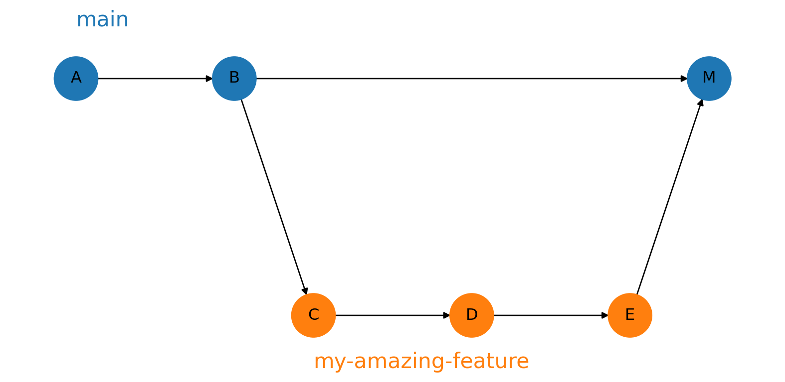
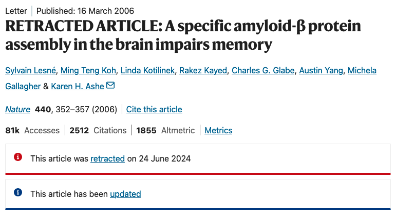

Reproducible Research and Project Management
Objectives
- Know the principles of reproducibility and literate programming, and how they can be realised in
Rusing Quarto. - Know how to collaborate and track your code using
git.
Why does Reproducibility Matter?

Scenario
- We have been given some legacy
Rcode and asked to “tidy it up” and produce a report based on it. - We’ll do so with Quarto + Git.
Part 1: Getting Started with Git
What is Git?
- Git is a source control system.
- Provides mechanisms for:
- Backing up.
- Checkpointing code.
- Developing new features without breaking working code.
- Collaboration.
Starting a Git Repo
git initgit addgit commit- Connecting with GitHub
git push
Part 2: Quarto, Reproducibility and Literate Programming
What is “Literate Programming”?
Literate programming is a methodology introduced by Donald Knuth, whereby:
- Explanations are written alongside code
- The document can be “rendered” (“knitted”) to produce a readable report.
- Changes in code are automatically reflected in the output to reduce manual mistakes.
Frameworks like Quarto implement Literate programming.
About Quarto
Quarto documents:
- Start with a YAML header (see demo)
- Intermix markdown text…
- …with code chunks (```
{r}...).
Markdown
Markdown is a special way of annotating plain text that can be translated to formatted text.
Markdown Example
This is plain text, italic and bold.
- We can have lists
- and even math! \(e^{i\pi} = -1\).
Live Demo
Sea Ice Extents
Migrating to Quarto
Part 3: Branching and Merging
Developing a New Feature
Dear Jon,
Even though your results look great, the points look a little bit curved. Please could you see whether a nonlinear model fits better?
Best,
The Boss
Warning
I want to write the new feature. I also want to have the live code accessible for bug fixing.
Solution: Branches

Git Branch Workflow, from Wikipedia
Branching
- Check branch with
git branch - Create a branch with
git branch my-amazing-feature - Switch to the branch with
git checkout my-amazing-feature. - Work as normal on the branch, without affecting
main.
Merging
We often need to merge changes between branches. This is done using git merge.
Once done making changes on my-amazing-feature:
- Return to main with
git checkout main - Merge changes with
git merge my-amazing-feature - Enter a message
- Push to GitHub.
Merge Conflicts
When you run git merge git will “pick up” commits from my-amazing-feature and put them on `main.
Sometimes it is obvious how to do this…
…sometimes less so!

Merge Conflicts
If Git can’t work out how to merge you will get a merge conflict.
Git will mark conflicting lines in the file.